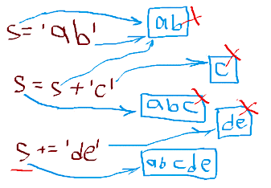
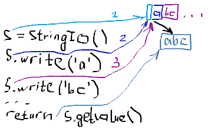

HomeIndexTODOЗадачи
HomeIndexTODOЗадачи GitHub
</>
GitHub
</>
Приемы программирования
В этом разделе рассматриваются решение типичных задач.
Итерация — это повторение фрагмента программы по некоторому набору данных или по условию. Итерации требуются для решения очень большого количества задач в программировании.
Рассмотрим итерацию по условию на примере псевдокода.
while <условие>:
<действия>При написании конкретного кода нам требуется определить две вещи:
Несколько более сложным для понимания вариантом итерации, является итерация по набору данных, однако она позволяет нам существенно сократить размер кода и улучшить его читаемость. Схема выглядит так:
for <переменная цикла> in <итерируемый объект>:
<действия с переменной цикла>
<другие действия>В качестве итерируемого объекта может использоваться коллекция, генератор или, возможно другие подобные объекты. Цикл for последовательно выбирает из итерируемого объекта значения, присваивает эти значения переменной цикла и выполняет определенные в теле цикла действия. Эти действия могут использовать переменную цикла на чтении, изменения переменной в теле цикла, как правило не используются.
Применительно к спискам могут использоваться два основных варианта итерации:
(range()).Этот вариант является более сложным, но он необходим в двух случаях:
- когда нам нужны сами индексы;
- когда требуется не по всей коллекции, а по ее части.
Итератор — это поведенческий паттерн, позволяющий последовательно обходить сложную коллекцию, без раскрытия деталей её реализации. Код использующий итератор зачастую вообще не имеет ссылок на коллекцию, с которой работает итератор. Итератор либо принимает коллекцию в параметрах конструктора при создании, либо возвращается самой коллекцией.
for в Python может использоваться для итерации по списку. Источник: https://pythonim.ru/list/iteratsiya-spiska-python
Метод range() позволяет пользователю создавать серию элементов в указанном диапазоне. for вместе с функцией range() можно использовать для итерации по списку.
Цикл while Python можно использовать для перебора списка.
Часто требуется формировать строку путем последовательного наращения. При использовании операции конкатенации каждый раз формируется новая строка, а конкатенируемые строки могут оставаться в памяти какое-то время, пока их не соберет сборщик мусора:

При большом количестве наращений (например в цикле) такой способ формирования строки может вызвать заметное замедление программы и кратковременный перерасход памяти.
Для решения этой проблемы может быть использован класс стандартной библиотеки Python StringIO.

Объект StringIO сохраняет добавляемые фрагменты строк, не создавая ненужных объектов.
Результирующая строка формируется один раз после всех необходимых наращений.
Пример см. в задаче Шифрование.
Для использования объекта StringIO требуется импорт дополнительного модуля,
from io import StringIO. Есть более простой способ эффективной конкатенации с использованием
метода join() объекта str(строки). В этом случае фрагменты строк собираются в список, а потом
объединяются в единую строку. При этом так же не расходуется память на промежуточные конкатенации.
Примеры см. в задачах:
Дано: переменная х содержащая числовое значение. Требуется составить строку "х = ...", где многоточие, это значение числа х.
>>> mcg = 'x = ' + str(x)
>>> mcg
'x = 12.5'В языке Python можно решить задачу проще, используя форматированные строки или это можно назвать
интерполяцией строк. Буква f перед кавычкой указывает на то, что строка будет форматированной.
>>> mcg = f'x = {x}'
>>> mcg
'x = 12.5'Без буквы f, строка воспринимается буквально.
>>> mcg = 'x = {x}'
>>> mcg
'x = {x}'Преимущества:
Традиционным способом формирования коллекции является следующая последовательность действий.
В ряде случаев можно использовать сокращенный вариант на основе имеющихся итерируемых объектов — list comprehension
Рассмотрим такую задачу: На вход программе подается строка текста, содержащая целые числа, разделенные символом пробела. Написать программу, которая выведет квадраты четных чисел, которые не оканчиваются на цифру 4.
При решении удобно рассматривать входные данные как поток значений над которым выполняются операции. В данном случае операции будут следующие:
Такое представление, будучи реализованным, обладает хорошей читаемостью, и при необходимости может быть расширенно без потери читаемости.
В данной задаче мы можем обрабатывать каждое значение "на лету", не сохраняя (материализуя) промежуточный результат в памяти. Для таких целей хорошо подходят генераторы.
numbers = (int(i) for i in input().split()) # 1
select = (i for i in numbers if i % 2 == 0 and i ** 2 % 10 != 4) # 2
transform = (i ** 2 for i in select) # 3
print(*transform) # 4В строке 1 создается генератор вводящий строку с клавиатуры и возвращающий набор чисел из этой строки. При этом сами эти действия здесь пока еще не выполняются.
Генератор в строке 2 (select) принимает поток чисел из созданного ранее генератора и выполняет
фильтрацию. Опять же, это действие здесь только определено, его выполнение отложено.
Генератор в строке 3 (transform) выполняет преобразование (возводит в квадрат) так же в отложенном
режиме.
В строке 4 процесс фактически запускается. Генераторы последовательно обращаются друг к другу, образуя своего рода конвейер.
Предположим теперь нам понадобилось выводить числа в квадратных скобках. Для этого можно между строками 3 и 4 добавить:
brackets = (f'[{i}]' for i in transform)В строке 4 понадобится только заменить transform на brackets.